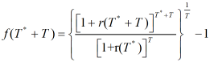
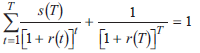
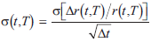
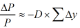
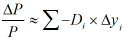
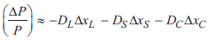

--------------------
Rates
--------------------
- Spot rates P(T) = 1 / [1+r(T)]T
- forward rates
- P(T*+T) = P(T*) × F(T*,T)
- F(T*,T) = P(T*+T) / P(T*)
- F(T*,T) = 1 / [1+f(T*,T)]T
- [1+r(T*+T)]T*+T = [1+r(T*)]T* ×
[1+f(T*,T)]T
- T期利率=即期到T-1期的一期利率的几何平均-1
r(T)={[1+r(1)][1+f(1,1)][1+f(2,1)]...[1+f(T-1,1)]}1/T-1
- T期利率在T*后的远期 = (T*+T期本息和/T*期本息和) 做T期几何平均 - 1

- 当T*=1 时, 1+r(1)=[1+r(T+1)]T+1/[1+f(1,T)]T
- riding the yield curve, or rolling down the yield curve
- Swap rate
- Swap高流动的原因
- 仅有对手方, 便于沟通和自定义合约
- 是最有效的对冲利率风险的工具
- swap利率
- 各期swap利率折现之和等于1, (末期时s(T)=1)

- Swap 利差
- swap spread = swap rate - 国债利率(on the run)
- 利差来源
- swap是OTC产品, 参与者为机构, 相比国债有背书方的信用风险补偿
- 流动性小于国债
- 套利机会存在
- Z利差
- 公司债收益率-国债即期收益率
- 反映信用风险和流动性更加准确
- Z利差不适用于含权债券
- I利差
- TED利差
- LIBOR(3个月) - T-bill(3个月)
- 两者交易量最大, 流动性最好, 没有流动性风险差异, 仅有信用风险差异
- Libor-OIS利差(隔夜互换)
- 局部期望理论
- 认为风险中性仅在短期成立, 长期都会引入风险溢价
- 纯期望, 无偏期望 : 将长期利率看作一系列短期利率的几何平均
- 流动性偏好理论 : 认为远期利率对未来短期利率估计有偏, 偏差为流动性补偿LPR liquidity premiums
- 市场分割理论 segmented market: 认为利率由各个市场的供求关系决定, 与未来短期利率预期的流动性补偿无关, 即各期限的收益率独立, 各期市场分割
- 偏好习惯理论 : 认为远期利率等于预期未来即期收益率加上一个风险补偿, 但这个风险补偿与期限不直接相关
- 现代期限结构模型
- 均衡期限结构模型
- 单因素或多因素模型, 有因素行为的假设, 比无套利更精确
- Cox-Ingersoll-Ross model
dr=r的变动, dt=t的变动, dz=随机变量的变动
a=均值复归速度, b=短期利率均值, r=上一期利率, σ=波动
- 前一项为复归项, 后一项为扰动项
- Vasicek model
- dr = a(b-r)dt + σdz
- 扰动项不受r的影响
- 无套利模型: Ho-Lee 模型
- drt = θtdt + σdzt
- θtdt: 时间相关趋势项, 对市场利率求导得出
- 用于零息债券定价估值和估计利率曲线走势
--------------------
收益率曲线因素模型
--------------------
- shaping risk, 非平行移动带来的债券组合收益率变化
- level, 整体位移
- steepness, 倾斜度变化, 长期和短期变化不一样
- curvature, 曲度变化, 中期和长短期变化不一样
- 成熟期结构的收益曲线波动

- 管理收益曲线风险
- 指标管理
- 有效久期 effective duration, 各期权重相同

- 关键利率久期 key rate duration

- 如何得到Df, 假设当仅有因素f变化△f时, Df=△P%/△f
- 对三种变化引发的风险进行管理

其中Dl=level, Ds=steepness, Dc=curvature
--------------------
Next Chaptor